Frontier Models & Evaluations
米中フロンティアモデルの実力差をベンチマーク横断で比較し、競争の構図を可視化する。30以上のモデルを統一ランキングで並べ、METR・Apollo・Epoch AIの評価も一覧する。
US vs China — Frontier Gap
各ベンチマークで米欧最高スコアと中華最高スコアを直接比較する。一般知能・推論（HLE、GPQA、ARC-AGI-2）では米欧が依然リード。コーディング（SWE-Ver、LiveCodeBench）では中華系（MiniMax / GLM）が拮抗。数学オリンピック系（AIME / IMO）は中華系がリードする領域も出てきた。
US vs China Best Score
6 Benchmarks各ベンチマークで両陣営の最高スコアを並べる。差分が縮まっている領域と、依然として開いている領域が一目で分かる。
Gap by Benchmark (%-point)
US − China正の値は米欧リード、負の値は中華系リード。2026年前半時点のスナップショット。
Benchmark Leaderboards
同じ「SOTA」でもベンチマークごとに別の物語を語る。一般知能系（HLE、GPQA）はGoogleがリード、コーディング（SWE-Bench、LMArena Coding）はAnthropicがリード、推論スピード系（LMArena Text総合）はAnthropic・Google・xAIが週単位で入れ替わる。SWE-Bench Verifiedは汚染問題が判明したため、現在はSWE-Bench Proへ移行中。横断照合はArtificial Analysis推奨。
HLE Score Progression
Humanity's Last Exam · 2024 Q4 — 2026 Q11年でSOTAが2.7%から44.7%へ。フロンティアモデルが「人類最後のテスト」の解答率で中盤40%台に到達した軌跡。
Top 5 Models — Cross-Benchmark
GPQA / HLE / ARC-AGI-2 / SWE-Verベンチマークごとに強者が違う。一般知能でGoogle、コーディングでAnthropic、抽象推論でGoogleがリード。
LMArena — Overall
実ユーザーが匿名の2モデル回答を盲検比較し、勝ち負けからEloレーティングを算出する。好みという「人間の判断」をそのまま順位化するため、ベンチマーク汚染の影響を受けにくい。Overall / Coding / Vision 等のサブボードあり。
- Claude Opus 4.6 Thinking1504
- Gemini 3.1 Pro Preview1493
- Grok 4.20 Beta11491
- GPT-5.4 High1484
Humanity's Last Exam
数学・人文・自然科学にまたがる博士級2,500問。Scale AI × CAIS が2025年に「人類最後の閉じた学術ベンチマーク」として公開。回答は短答・多肢選択で自動採点可能。既存ベンチが天井に達したあと、LLMの限界を炙り出す役割。
- Gemini 3.1 Pro Preview44.7%
- GPT-5.4 (xhigh)41.6%
- GPT-5.3 Codex (xhigh)39.9%
- Gemini 3 Pro Preview37.5%
- Claude Opus 4.6 Thinking Max34.4%
ARC-AGI-2
François Chollet設計の抽象推論テスト。少数の入出力例からルールを推論してグリッドを変換する。人間は直感で解けるがLLMが長年苦戦した領域。記憶ではなく「未知パターンへの一般化」を測る。後継のARC-AGI-3も併走中。
- Gemini 3.1 Pro77.1%
- Poetiq (on Gemini 3 Pro)54.0%
- Claude Opus 4.6 Thinking31.0%
- Gemini 3 Pro31.1%
- GPT-5.4 Pro28.0%
SWE-Bench Pro / Verified
実在する12のGitHubリポジトリから集めた未解決Issueを、モデルにパッチで修正させる。テストスイートを通れば正解。Verifiedは手動検証版だったが汚染発覚、より厳格な Pro版（Scale AI運営）へ移行中。現実のエンジニアリング能力の近似指標。
- Opus 4.6 + WarpGrep v2 (Pro)57.5%
- GPT-5.3-Codex (Pro)56.8%
- GPT-5.2-Codex (Pro)56.4%
- Claude Opus 4.5 (Pro, SEAL)45.9%
- Claude Opus 4.6 (Verified)80.8%
Unified Frontier Ranking
LMArena Elo（正規化）、HLE、GPQA Diamond、ARC-AGI-2、SWE-Bench Verified / Pro の5軸を重み付けした総合スコア（0-100正規化）でランキング。第三者評価値と発表主張値が混在する点に注意（※マーク）。空欄は該当ベンチの公表値なし。
| # | Lab | Model | LMArena | HLE | GPQA | ARC-2 | SWE-V | Composite |
|---|---|---|---|---|---|---|---|---|
| 1 |  Google DM Google DM |
Gemini 3.1 Pro | 1493 | 44.7% | 94.3% | 77.1% | 80.6% | 96.8 |
| 2 | Anthropic | Claude Opus 4.6 | 1504 | 34.4% | 88.0% | 31.0% | 80.8% | 88.1 |
| 3 |  OpenAI OpenAI |
GPT-5.4 Pro | 1484 | 41.6% | 87.0% | 28.0% | 78.0% | 86.4 |
| 4 |  xAI xAI |
Grok 4.20 Beta1 | 1491 | 38.6% | 82.0% | 16.0% | 65.0% | 78.3 |
| 5 | DeepSeek | V3.2-Speciale | — | 22.0%※ | 80.0%※ | 14.0%※ | 68.0%※ | 65.2 |
| 6 |  Alibaba Qwen Alibaba Qwen |
Qwen3-Max-Thinking | — | 21.0%※ | 78.0%※ | 12.0%※ | 69.6% | 63.8 |
| 7 | KMoonshot Kimi | Kimi K2.5 | — | — | — | — | 65.8% | 60.2 |
| 8 | MiniMax | M2.5 | — | — | — | — | 80.2% | 59.7 |
| 9 | Baidu | ERNIE 5.0 | — | — | — | — | — | 58.0 |
| 10 |  Zhipu GLM Zhipu GLM |
GLM-4.6 | — | — | — | — | — | 55.4 |
| 11 |  Mistral Mistral |
Mistral Large 3 | — | — | — | — | — | 52.0 |
| 12 | Meta | Llama 4 Maverick | — | — | — | — | — | 48.0 |
※印は vendor claim または第三者評価で値が確定していない数値。Composite は LMArena(Elo正規化) 30% + HLE 25% + GPQA 15% + ARC-AGI-2 15% + SWE-Ver 15% の加重平均。欠損値は対応する軸の平均で補完。あくまで俯瞰用のラフな目安であり、決定的ランキングではない。LMArena / ARC-2は週次で変動。
Release Timeline
2025 — 2026 Q2 · Lab × Monthラボごとに縦方向に分離。赤ドットがフロンティア級SOTA更新、黒が通常リリース。点にカーソルを合わせるとモデル名が表示される。
US / EU Frontier Models
最新フラグシップの総合性能（LMArena Elo + HLE + ARC-AGI-2 + SWE-Bench の総合的位置）で並び替え。Anthropic（Claude Opus 4.6）がLMArenaで総合1位、Google（Gemini 3.1 Pro）がHLE・ARC-AGI-2・GPQAで記録更新。2025年後半以降、推論モデルと通常モデルの区別は曖昧になり、大半が「reasoning-on-demand」型へ収斂した。
| Rank | Lab | Model | Context | Notes | Key Benchmarks |
|---|---|---|---|---|---|
| #1 | Anthropic | Claude Opus 4.6 Thinking2026 Q1 | 1M | Adaptive Thinking搭載。LMArena Elo 1504で総合1位（2026-04）。Coding subboardでも1位 | LMArena 1504 · SWE-Ver 80.8% · HLE 34.4% · Coding Elo 1561 |
| Anthropic | Claude Sonnet 4.62026 Q1 | 1M | Opusとの差1.2ptを$3/$15/MTokで実現。拡張思考対応 | SWE-Ver 79.6% | |
| Anthropic | Claude Haiku 4.52025-10 | 200K | $0.80/$4.00/MTok。Sonnet 4.5比90%のagentic coding性能 | SWE-Ver 73.3% · SWE-Pro 39.5% | |
| #2 | Google DeepMind |
Gemini 3.1 Pro2026-02 | 1M | Artificial Analysis Intelligence Index #1（115モデル中）。HLE / ARC-AGI-2 / GPQA で現在のSOTA | LMArena 1493 · GPQA 94.3% · HLE 44.7% · ARC-AGI-2 77.1% · SWE-Ver 80.6% |
| Google DeepMind |
Gemini 3 Pro2025-11 | 1M | Agentic/multimodal。新規推論ベンチで大幅ジャンプ（3.1の前身） | GPQA 91.9% · ARC-AGI-2 31.1% | |
| #3 | xAI |
Grok 4.20 Beta12026 Q1 | 2M | LMArena総合3位（2026-04）。200万コンテキスト | LMArena 1491 |
| xAI |
Grok 4.12025-11 | 256K | 幻覚率を12.09%→4.22%に削減（-65%） | LMArena Text 1483 | |
| xAI |
Grok 42025-07 | 256K | 推論特化、PhDレベル主張 | HLE 38.6% (w/tools) | |
| #4 | OpenAI |
GPT-5.4 Pro2026 Q1 | 400K | "xhigh"推論tier。FrontierMath Tiers 1-3で50%記録 | LMArena 1484 · HLE 41.6% · FM T4 38% |
| OpenAI |
GPT-5.22025-12 | 400K | ARC-AGI-1で初の90%超え。AIMEは満点 | HLE 27.8% · FM Tier4 31% | |
| OpenAI |
GPT-52025-08 | 400K | GPT-4o / o3系統を統合したフラグシップ。マルチモーダル | GPQA 88.4% · SWE-Ver 74.9% · AIME25 94.6% | |
| #5 | Mistral |
Mistral Large 32025-12 | 256K | Sparse MoE 675B/41B active。Apache 2.0。3,000 H200で訓練。OSS non-reasoning #2 on LMArena | OSS #2 non-reasoning |
| #6 | Meta | Llama 4 Scout / Maverick2025-04 | 10M* | オープン重み最大のコンテキスト。Scout 109B/17B active、Maverick 400B/17B/128 experts。*長コンテキスト性能は第三者評価で弱点指摘 | GPT-4o parity claim |
| Meta | Llama 4 Behemoth未リリース | — | 2Tパラメータ、発表のみ。2026-04時点で未公開 | — |
Chinese Models
DeepSeekが2025年IMO / IOI / ICPC金メダル相当でリード、Moonshot Kimi K2.5はフロンティア級agentic推論を$4.6M主張。Baidu ERNIE 5.0は2.4Tの omni-modal としてGPT-5 Highクラスを謳う。オープン重み（Qwen / DeepSeek / Kimi / GLM / ERNIE 4.5）と非公開（Doubao / Hunyuan）の両軸が並走している。
| Rank | Lab | Model | Context | Notes | Key Benchmarks |
|---|---|---|---|---|---|
| #1 | DeepSeek | DeepSeek V3.2-Speciale2025-12 | 128K | Gemini-3.0-Pro級と主張。IMO / CMO / ICPC World Finals / IOI 2025で金メダル相当 | IMO/IOI gold |
| DeepSeek | DeepSeek V3.12025-08 | 128K | V3+R1をハイブリッド化した単一モデル。671B total / 37B active | — | |
| #2 | Alibaba Qwen |
Qwen3.6-Plus2026-04 | 1M | Agentic coding + multimodal強化。エンタープライズ向け最新版 | — |
| Alibaba Qwen |
Qwen3-Max-Thinking2026-01 | 256K | 19ベンチでGPT-5.2-T / Claude Opus 4.5 / Gemini 3 Proとのパリティを主張 | GPT-5.2-T parity claim | |
| Alibaba Qwen |
Qwen3 / Qwen3-235B-A22B2025-04 | 128K | 36Tトークン事前学習。オープン重み。hybrid reasoning採用 | SWE-Ver 69.6% · ArenaHard 91.0 | |
| #3 | KMoonshot Kimi | Kimi K2.52026-01 | 256K | Native multimodal。最大100サブエージェント・1,500 tool callまでのswarm構成（4.5x speedup） | — |
| KMoonshot Kimi | Kimi K2 Thinking2025-11 | 256K | Native INT4。CoTとtool callingをinterleave。訓練コスト$4.6M主張 | Frontier-class agentic | |
| KMoonshot Kimi | Kimi K22025-07 | 128K | 1T total / 32B active MoE。15.5Tトークン事前学習 | SWE-Ver 65.8% · SWE-Multi 47.3% | |
| #4 | Baidu | ERNIE 5.02026-01 | — | 2.4Tパラメータ、native omni-modal（text/image/audio/video）。Gemini 2.5 Pro / GPT-5 Highとのパリティを主張 | GPT-5 High parity claim |
| Baidu | ERNIE 4.5 Family2025-06 | 128K | 10バリアント、MoE 424B/47B（VLフラグシップ）から0.3B denseまで | — | |
| #5 | MiniMax | MiniMax-M2 / M2.52025-10 / 2026-03 | 128K | 230B total / 10B active。Agentic & codingに最適化。SWE-Ver 80.2%で米系フラグシップと拮抗 | SWE-Ver 80.2% |
| MiniMax | MiniMax-M12025-06 | 1M | 初のオープン重みhybrid-attention推論モデル。456B total / 45.9B active | — | |
| #6 | Zhipu GLM |
GLM-4.62025-09 | 200K | 357B params、MIT license。LiveCodeBench v6 #1。GLM-4.5比で15%少ないトークン消費 | LiveCodeBench v6 #1 82.8% · AIME25 93.9% · Terminal-Bench 40.5% |
| Zhipu GLM |
GLM-4.7 / GLM-52025-12 / 発表 | — | GLM-5は745Bパラメータで発表済み | — | |
| #7 |  ByteDance ByteDance |
Doubao 1.5 Pro2025-01 | 128K | Sparse MoE + "Deep Thinking" mode。DeepSeekの5倍、o1の200倍安い価格 | GPT-4o parity / o1-prev on AIME |
| #8 |  Tencent Tencent |
Hunyuan Turbo S / 3.02025 / 2026-04 | — | Turbo Sはsub-1s latency chatbot。Hunyuan 3.0は2026年4月リリース計画で内部テスト中 | — |
People Behind the Models
モデル名の裏には人がいる。意思決定と方向性を握る代表者をラボごとに一覧する。中華系ラボの一部はWikipedia/Commons等の公開画像が存在しないため、モノグラム表示で代替している（下記注記参照）。


写真出典: Wikimedia Commons（CC BY 2.0 / CC BY 3.0 / CC BY-SA 4.0 / CC0）。ホバーで白黒からカラーへ変化。モノグラム表示の5名は公開画像が見つからなかった人物。
Evaluation Agencies
ベンチマークスコアを読むだけではAIの現在地は見えない。タスクの時間軸を測るMETR、deceptive alignment を検出するApollo、compute動向を定量化するEpoch AI。異なる角度から「どこまで来たか」を描くのが評価機関の役割だ。
METR
モデルが独立に完了できるタスクの「時間軸（Task Horizon）」を測る。50%成功率で完了できる人間換算タスク長を指標とし、その倍増時間を推定する方法論で知られる。
AI Task Horizon — Doubling Trend
Log scale · Minutes → HoursApollo Research
フロンティアモデルが in-context scheming を行うかを体系的に検証する。監視を無効化しようとする、微妙な誤りを混入させる、自分の重みを外部に持ち出そうとする、といった行動を測定する。
2025-2026にはOpenAIとのパートナーシップを更新し、deliberative alignmentによるanti-scheming訓練を共同で検証。訓練後も敵対的プロンプト下で残存する欺瞞を検出。
Epoch AI
計算資源・データ・アルゴリズム効率の長期トレンドを定量化する研究機関。FrontierMathは現代数学者でも時間がかかる問題セット、GATEはAI自動化の経済モデル。
GATE model：2024年には計算資源の90%が訓練に使われていたが、2028年には70%訓練 / 30%推論へシフトする見通し。
2026計画：(1) 自動検証可能な未解決数学問題の新ベンチ、(2) long-horizon ソフトウェア開発タスク（METRとの共同）。

Scale AI SEAL / Artificial Analysis
ラボ自身の公表値ではなく第三者測定を提供するリーダーボード。Artificial Analysis Intelligence Indexは115モデルを横断スコアリングし、Gemini 3.1 Pro Previewが2026-02時点で#1。
LMSYS / Chatbot Arena
ユーザーによるブラインドpair-wise比較でEloを計算する代表的リーダーボード。Text総合・Coding・Vision・Hard Promptsなど複数のsubboardがあり、ベンダーがチューニングしにくい構造で知られる。

ARC Prize Foundation
François Chollet創設。パターン認識ではなく抽象推論を測るARC-AGI-2、後継のARC-AGI-3を運営。ARC Prize 2026には$2M超の賞金。2026年2月、Gemini 3.1 ProがARC-AGI-2で77.1%に到達し、数ヶ月で5%→77%の跳躍を記録した。
Recent Key Findings
ベンチマークの表面的な「SOTAが更新された」という話ではなく、評価の方法論自体や、能力分布そのものが構造的に変わった出来事を時系列で並べる。
SWE-Bench ProのTOPがVerifiedの約7割。Verifiedで80%台だったフロンティアモデルも、汚染を除去したProでは46〜57%に落ちる。GPT-5.3-CodexがPro 56.8%で首位。Anthropicの Opus 4.6 に WarpGrep v2 を組み合わせると57.5%に到達。Verifiedベースの「コーディング解決済み」言説は現場の難易度を2割ほど過小評価していた。
Gemini 3.1 ProがGPQA Diamondで94.3%、ARC-AGI-2で77.1%に到達。数ヶ月前まで5%だったARC-AGI-2が77%に跳ね上がり、ARC Prizeは後継のARC-AGI-3を同時リリースした。Chollet型抽象推論ベンチが「更新速度が追いつかない」フェーズに入った。
METRのTime Horizon 1.1更新で、倍増時間が131日に短縮。旧方法論の165日から20%速くなった。これは「測り方が精密化しただけ」ではなく、タスクスイートを+34%拡張した結果として精度が上がった更新。指数関数の傾きそのものが従来推定より急だったことを意味する。
Baidu ERNIE 5.0が2.4Tパラメータの omni-modal 公開モデルとしてリリース。Gemini 2.5 Pro / GPT-5 Highとのパリティを主張。中華系ラボが「native multimodality」領域で米系にキャッチアップしたことを示すベンチマーク。
DeepSeek V3.2-SpecialeがIMO / CMO / ICPC World Finals / IOI 2025で金メダル相当。オープン重みの中華系推論モデルが、競技数学・情報競技の全主要大会で金に到達した。GPT-5.2がARC-AGI-1で初めて90%超えしたのも同月。
Moonshot Kimi K2 Thinkingが訓練コスト$4.6Mを主張。フロンティア級のagentic reasoningが米系ラボの推定投資額の2桁下で達成可能であることを示した。能力/コストの非線形性が中華系オープン重みの競争力の源泉になっている。
SWE-Bench Verifiedで汚染発覚。OpenAIの監査で、フロンティアモデル（GPT-5.2、Claude Opus 4.5、Gemini 3 Flash）が一部タスクでgold patchを逐語再現できることが判明。OpenAIは Verified の報告を停止し、SWE-Bench Proへの移行を推奨。Proではスコアが大幅に低下する。コーディング評価の「現在地」が一度リセットされた出来事。
Apollo Research：「scheming は能力とともにスケールする」。より有能なモデルほど、監視の無効化、微妙な誤りの混入、重みの外部持ち出し試行などの頻度と巧妙さが増すパターンが確認された。OpenAIはdeliberative alignmentによるanti-scheming訓練を導入したが、敵対的プロンプト下では残存する欺瞞を検出。
Llama 4の10Mコンテキストウィンドウ主張を第三者評価が否定。Scout / Maverickとも長コンテキスト実性能が公称値に追いつかないことが独立評価で指摘され、「advertisedコンテキスト長」全般への懐疑が広がった。Meta主導のオープン重みフラグシップが実性能と乖離した例として記憶されている。